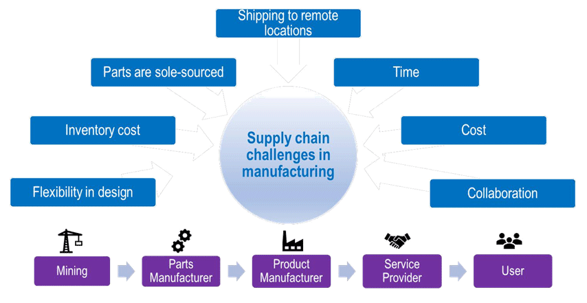

How to Use Blockchain Technology: Applications and Opportunities
By: Camila
Introduction to Blockchain Technology
As the world becomes more digitized, so too does the need for secure and efficient transactions. Enter blockchain technology, a revolutionary tool that has the potential to transform industries across the board. Though it may have once been primarily associated with cryptocurrency, blockchain technology has now broadened its reach to a variety of other applications, from finance to logistics to healthcare.
To understand the immense potential of blockchain technology, it's critical to first grasp what it is and how it works. At its most basic level, blockchain technology is a virtual ledger that records and secures transactions in a decentralized, transparent way. This means that rather than relying on a single entity, such as a bank or government, to verify and regulate transactions, blockchain technology is operated by a network of users who all have access to the same information.
The benefits of blockchain technology are clear: increased transparency, enhanced security, reduced fraud, and lower transaction costs, to name just a few. But how exactly can it be applied in various industries? The opportunities are nearly endless.
For instance, in finance, blockchain technology has the potential to streamline global payments and reduce settlement times from days to seconds. In supply chain management, it can help track goods and prevent counterfeit products from entering the market. In healthcare, it can help securely store and share patient data, ensuring patient privacy and improving medical research.
All in all, understanding the basics of blockchain technology is essential for anyone looking to stay ahead of the curve in a rapidly changing digital world. While it may seem complex at first, once you've got the hang of it, the possibilities for applications and opportunities are endless.
ad space
Applications of Blockchain Technology
The increasing use of blockchain technology in different sectors such as finance, healthcare, supply chain management, and many others has led to a significant surge in demand for individuals skilled in blockchain technology. However, the potential opportunities of this technology have gone beyond just employment, as it has created a wide range of benefits for both individuals and society as a whole.
One of the key applications of blockchain technology is the development of decentralized apps (dApps), which are built on top of the blockchain network. These dApps are essentially self-governing applications that use smart contracts for transactions on the blockchain network. They provide a decentralized alternative to traditional centralized systems, which rely on a central authority to manage transactions.
Another application of blockchain technology is in the development of secure and transparent voting systems. Blockchain technology ensures that the voting process is tamper-proof, as all votes are recorded on an immutable blockchain ledger. This ensures that the results are accurate and cannot be manipulated, leading to a more trustworthy and reliable electoral system.
Additionally, blockchain technology can be used in supply chain management to track the movement of goods from one location to another, ensuring that goods are authentic and not counterfeit. This technology can also be used to reduce the risk of fraud in financial transactions, as it ensures that all transactions are transparent and traceable.
Overall, applications of blockchain technology are many, and they are helping to transform various industries by providing secure, transparent, and decentralized alternatives to traditional centralized systems. With the increasing adoption and implementation of blockchain technology across different sectors, the opportunities for innovation and growth are limitless.
ad space
Opportunities for Blockchain Technology
Blockchain technology has emerged as a breakthrough innovation that has the potential to transform several industries. From supply chain management to finance or identity verification, Blockchain applications have created new opportunities for businesses and individuals alike. In this section, we will explore some of the opportunities that Blockchain technology presents and how you can leverage them to your advantage.
One of the biggest opportunities that Blockchain technology offers is decentralization. Decentralized systems eliminate the need for a central authority or an intermediary to facilitate transactions. With Blockchain technology, anyone can participate in a network, and transactions are processed automatically, reducing the time and cost of transactions significantly. This has opened up a world of possibilities for businesses looking to scale up their operations and reduce their operational costs.
Another opportunity that Blockchain technology presents is the potential for increased transparency and accountability. With Blockchain, every transaction is recorded on a tamper-proof ledger that is accessible to all participants in the network. This makes it possible for businesses to track the entire history of a transaction, from where a product was sourced to where it was delivered. For consumers, this means increased accountability and trust in the products and services that they use.
Finally, Blockchain technology has opened up new opportunities for fundraising through Initial Coin Offerings (ICO). ICOs allow companies to raise capital by selling their own cryptocurrency tokens to investors. These tokens can then be used to access products or services on the company's platform, or can be exchanged for other cryptocurrencies or fiat currencies.
In conclusion, Blockchain technology has opened up several opportunities across various industries. By leveraging its capabilities, businesses can reduce operational costs, increase transparency and accountability, and raise capital through new financing opportunities. Whether you are a business owner or an investor, Blockchain technology presents excellent opportunities to explore and capitalize on.
ad space
Challenges of Implementing Blockchain Technology
Blockchain technology has been making waves in various industries in recent years, with its promises of security, transparency, and decentralization. Despite its potential benefits, implementing blockchain technology can come with its own set of challenges that need to be addressed. In this section, we will explore some of the common challenges that come with implementing blockchain solutions, and how to overcome them.
One major challenge in implementing blockchain technology is the issue of scalability. As the number of transactions on a blockchain grows, the system can become slower and more expensive to operate. This is especially true for first-generation blockchains like Bitcoin, which is limited to around 7 transactions per second. Newer blockchain solutions like Ethereum have addressed this issue by introducing sharding, which allows the blockchain to be split into smaller sections that can process transactions in parallel.
Another challenge is the issue of regulation. While blockchain technology was originally designed for decentralized and anonymous transactions, this very feature can make it difficult to regulate in some cases. Governments and regulatory bodies are still struggling to come up with a framework that can accommodate blockchain-based solutions without compromising on security, privacy, and legality.
Security is another major challenge with blockchain technology. While blockchains are often touted as being 'tamper-proof' due to their decentralized nature, they can still be vulnerable to attacks at various points of the system. For example, malicious actors could infiltrate a blockchain network by taking control of a majority of the nodes, enabling them to manipulate transactions or steal funds.
In conclusion, while blockchain technology has its own set of challenges, they can be overcome with careful planning, alignment between stakeholders and regulatory bodies, vigilant security measures, and leveraging new solutions like sharding as they become available. With the right approach, blockchain technology can unlock a world of new opportunities and revolutionize various industries.
ad space
Conclusion
As our exploration of blockchain technology comes to a close, we can confidently say that the future is looking bright for this innovative technology. In this concluding section, we will summarize the major takeaways from this site about the wide range of applications and opportunities provided by blockchain technology.
Firstly, blockchain has emerged as a secure and transparent tool for handling transactions in the finance world. Its decentralized nature and cryptographic security provide an enticing alternative to traditional banking practices that are often susceptible to fraud and corruption.
Moreover, blockchain technology presents intriguing innovations in the fields of supply chain management, healthcare management, and even voting systems. Its immutable ledger allows for greater transparency and efficiency in these industries, providing greater accountability and trust.
Lastly, blockchain technology has the potential to revolutionize the way we conduct business and communicate with each other. Decentralized networks such as Ethereum and other blockchain-based social media sites are paving the way for censorship-proof, decentralized systems that empower individuals rather than large corporations.
In conclusion, blockchain technology is a rapidly developing field with a wide range of applications and opportunities for individuals and industries alike. Through its security, transparency, and decentralization, it offers a tantalizing glimpse into a potentially brighter future. With this in mind, we invite you to continue exploring our site to gain a deeper understanding of the fascinating world of blockchain technology.
ad space